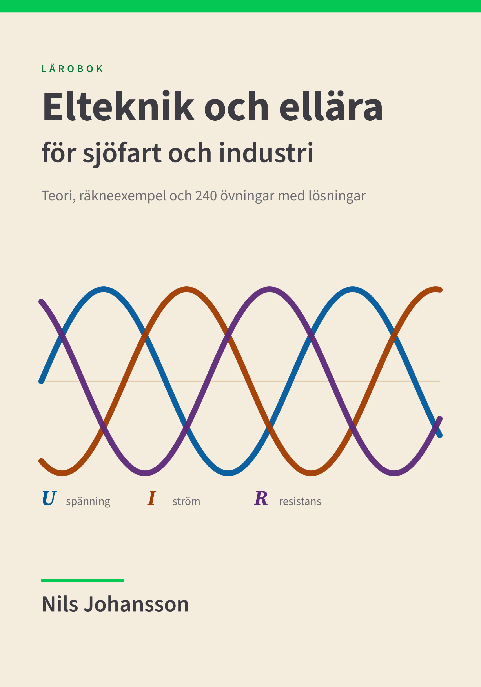
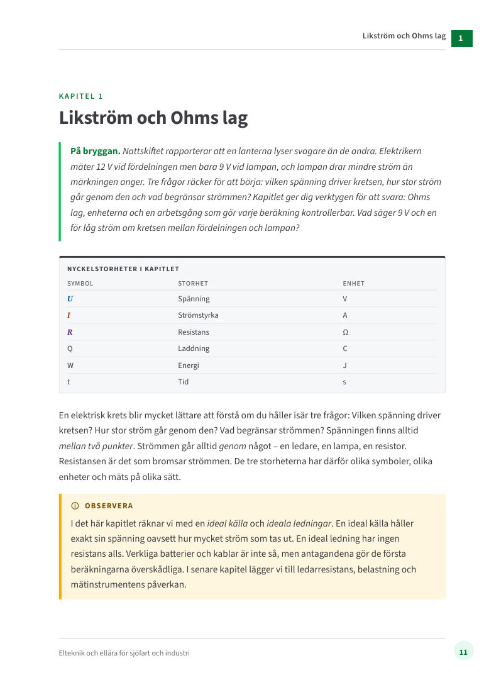
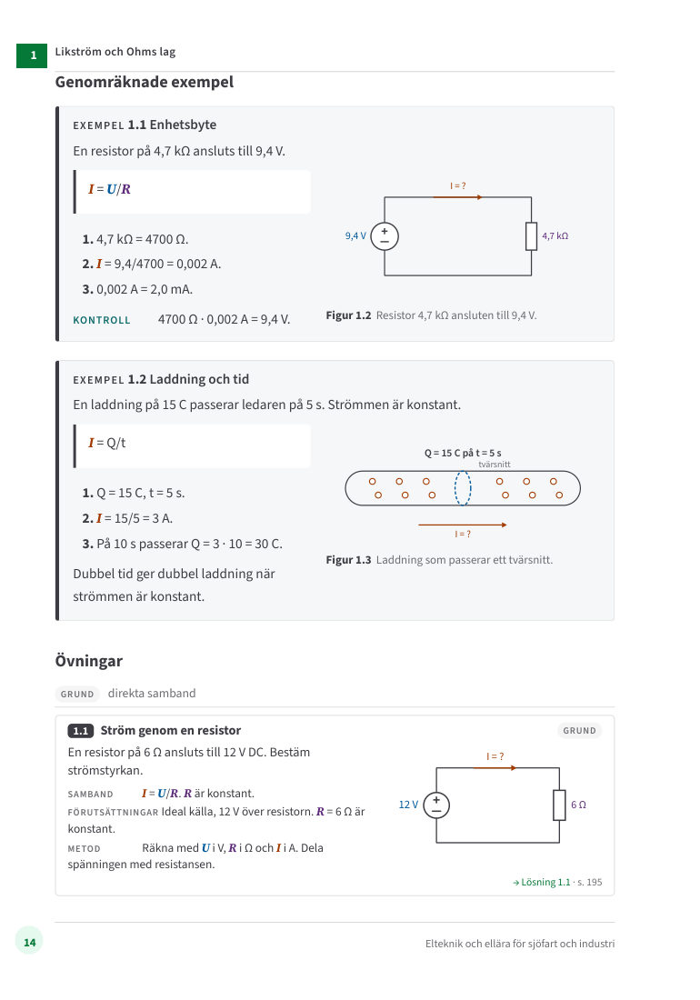
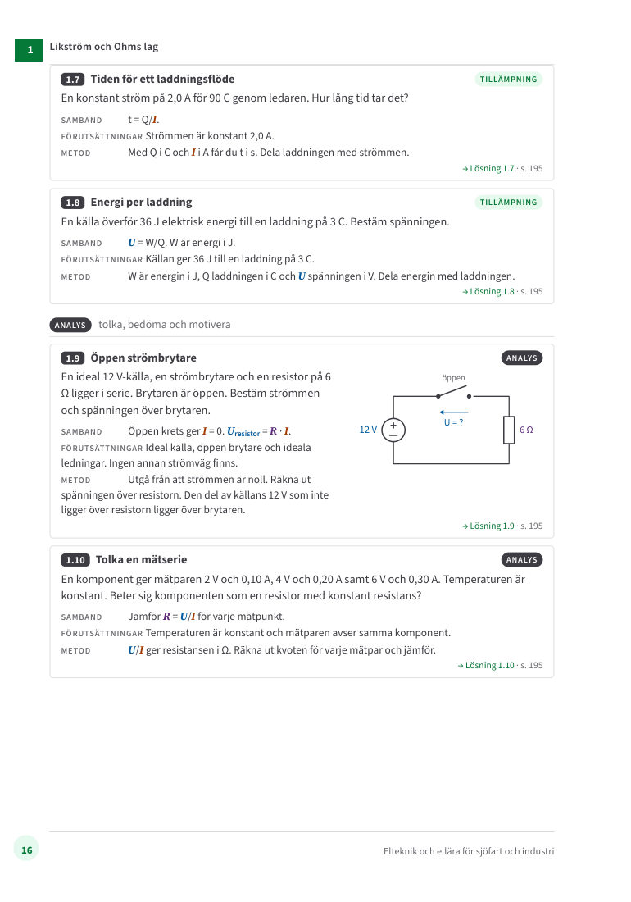

Del 1
Likström och mätning
- Likström och Ohms lag
- Serie och parallell
- Blandade kretsar och repetition
- Effekt och energi
- Kirchhoffs lagar
- Multimeter och mätfel

Lärobok · Första upplagan 2026
Teori, räkneexempel och 240 övningar med lösningar
Lär dig förstå elektriska kretsar, välja rätt samband och kontrollera dina beräkningar – från likström och Ohms lag till trefas, generatorer, mätteknik och systematisk felsökning. Skriven för dig som studerar på yrkeshögskola eller arbetar ombord och i industrin.
PDF · kapitel 1 med exempel och övningar
E-bok som PDF · nedladdning direkt efter köpet · säker betalning via Shopify
Boken följer ämnet från likström och Ohms lag till växelström, trefas, generatorer, mätteknik och systematisk felsökning. Den vänder sig till studerande inom yrkeshögskola och yrkesutbildning, och till yrkesverksamma som vill repetera eller fördjupa sig.
Varje kapitel börjar med ett scenario ombord eller i industrin – en lanterna som lyser svagt, en pump som inte startar, ett isolationslarm som inte går att kvittera. Sedan kommer förklaringar i klarspråk, genomräknade exempel med kretsschema och tio övningar i tre nivåer: grund, tillämpning och analys. Alla lösningar finns längst bak, med sidhänvisningar åt båda hållen.
Elsäkerhet enligt SS-EN 50110-1 och ESA, regler för fartyg, nödkraft enligt SOLAS och batterisystem ombord ingår, liksom ett formelkort på tre sidor och ett sakregister.
Del 1
Del 2
Del 3
Del 4
Därtill: symbollista, formelkort, lösningar till alla 240 övningar, källförteckning och sakregister.
Sidor ur kapitel 1. Provkapitlet innehåller hela kapitlet.



Fem fristående artiklar med problem och räkneexempel ur bokens ämnen – läs gratis.
Fritt
Omslag, innehållsförteckning, inledning, symbollista och hela kapitel 1 med exempel och övningar.
Ladda ner PDFE-bok
375 kr
Alla 24 kapitel, 240 övningar med fullständiga lösningar, formelkort och sakregister – 226 sidor som PDF.
Kursdeltagare och lärare kan låsa upp hela boken som PDF, eller som e-bok (EPUB) för Apple Böcker, Google Play Böcker och andra läsappar. Filerna låses upp i din webbläsare.